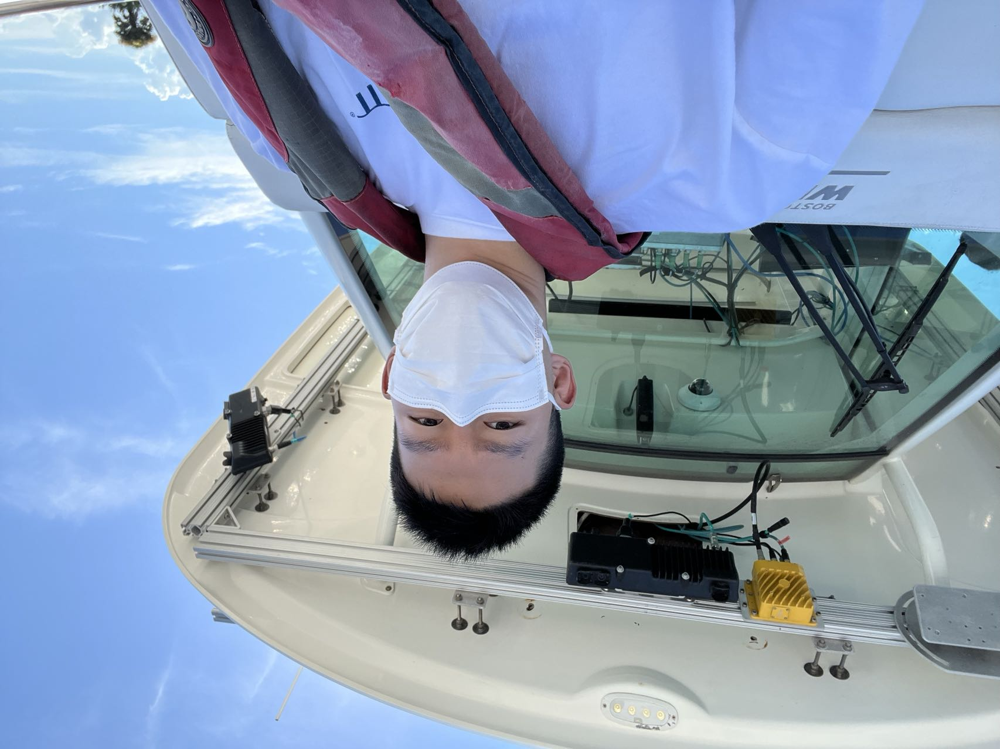
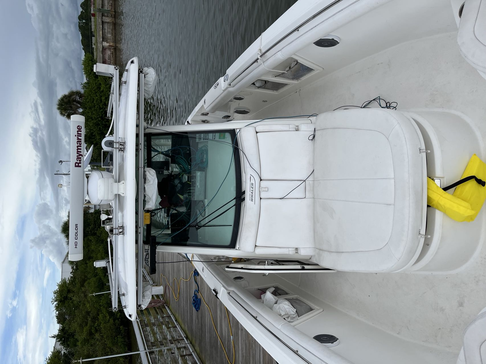
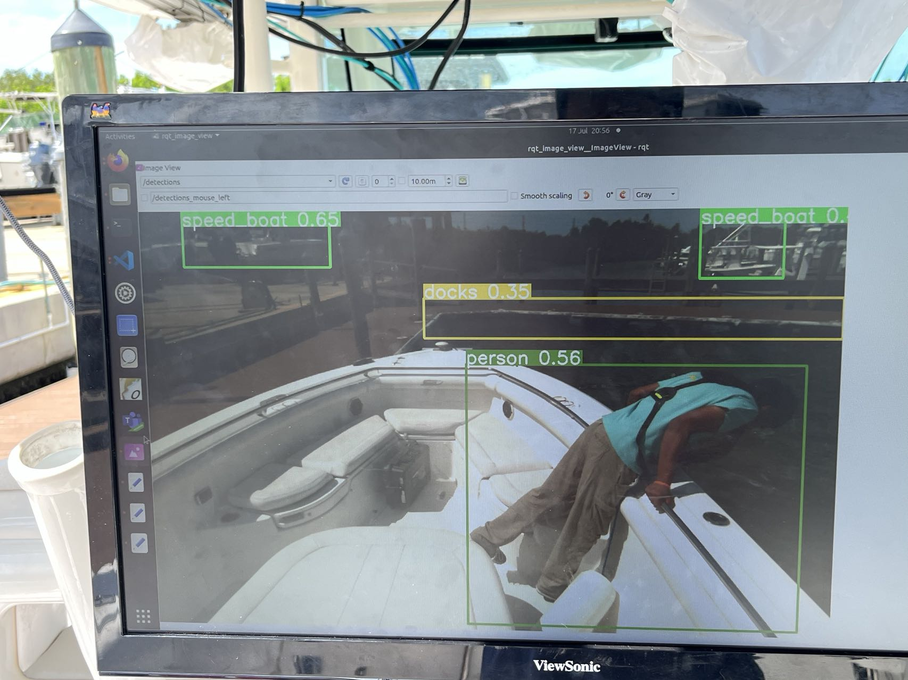
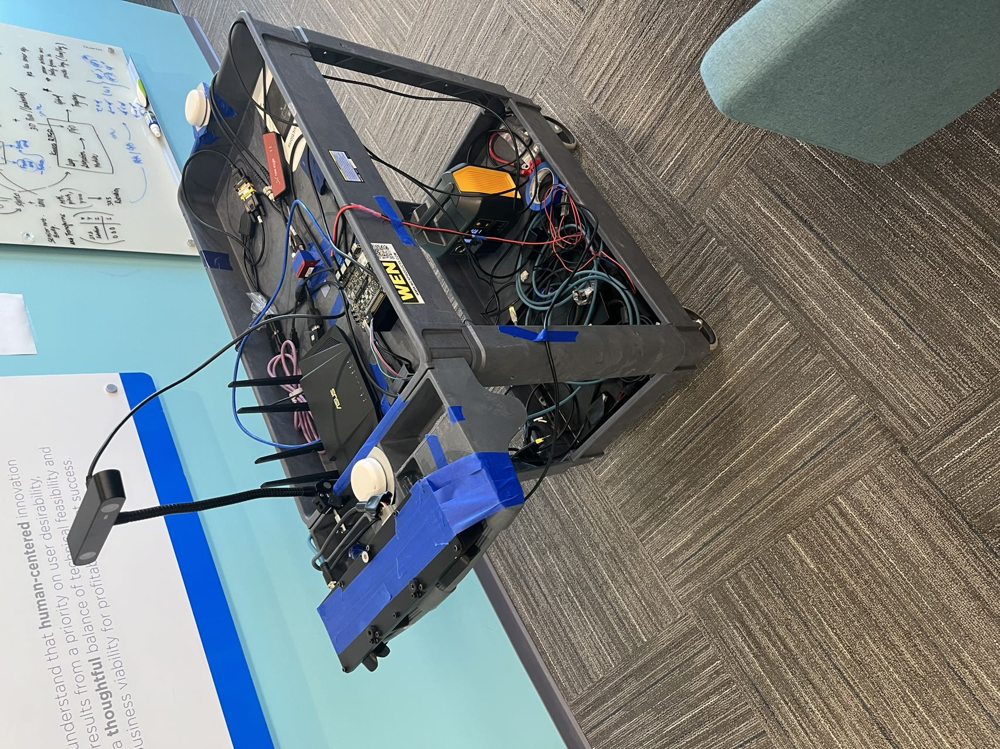

ACES boat
Some pictures of the ACES boat used for on-water testing in Edgewater,Florida and the laboratory
testing setup on cart and small boat




Some pictures of the ACES boat used for on-water testing in Edgewater,Florida and the laboratory
testing setup on cart and small boat